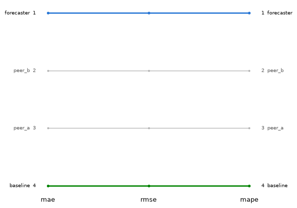
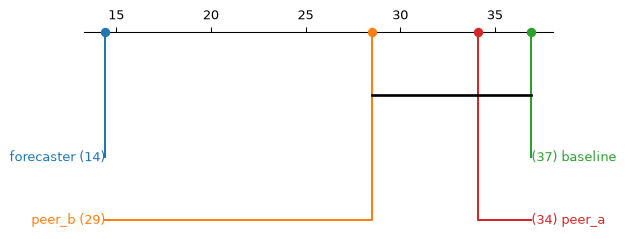
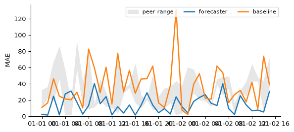
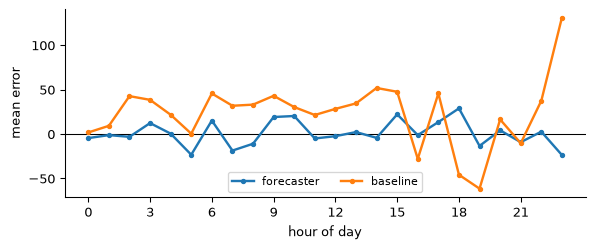
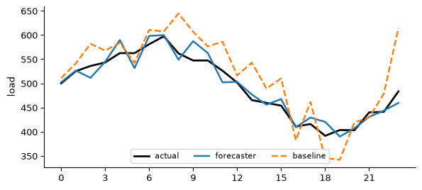

import numpy as np
import pandas as pd
rng = np.random.default_rng(7)
idx = pd.date_range("2024-01-01", periods=40, freq="h")
actual = pd.Series(
500 + 80 * np.sin(2 * np.pi * idx.hour / 24) + rng.normal(0, 15, 40),
index=idx,
)
forecasts = {
"forecaster": actual + rng.normal(0, 20, 40),
"baseline": actual + rng.normal(30, 45, 40),
"peer_a": actual + rng.normal(-15, 35, 40),
"peer_b": actual + rng.normal(10, 40, 40),
}Evaluating a Forecasting Campaign
This guide walks through evaluating a campaign of forecasting entries — several forecasters (or teams, or model variants) scored against the same ground truth over a shared period — end to end: turning raw forecast and actual series into per-period scores, aggregating them into a leaderboard, checking whether the ranking is stable across metrics, testing whether the differences between entries are statistically significant, and inspecting where and when the errors occur.
Overview
The pipeline has two layers:
spotforecast2_safe.processing.forecast_scoringandspotforecast2_safe.stats.comparisoncompute the numbers: per-period scores, an aggregated leaderboard, cross-metric rank concordance, and paired significance tests.spotforecast2.plots.comparisonandspotforecast2.plots.evaluationturn those numbers into figures: a rank-stability bump chart, a critical-difference diagram, a metric timeline, an hour-of-day error profile, and a forecast overlay.
None of the plotting functions used below hard-code entry ids, colors, or any domain specifics — every example on this page works identically for a two-entry backtest comparison or a forty-entry public leaderboard.
Installation
plot_critical_difference wraps scikit_posthocs.critical_difference_diagram, imported lazily on first call:
uv pip install scikit-posthocsEvery other function on this page only needs spotforecast2 and spotforecast2-safe, both already installed.
Building a synthetic campaign
The examples below use a small, self-contained campaign: four forecasting entries scored against the same hourly ground truth over 40 hours (about a day and two thirds). In a real deployment freq would typically be "D" so that many hourly observations are aggregated into one score per day; here freq="h" is used instead so that each of the ~40 hours is already its own scored period, keeping the example short while still exercising every step of the pipeline.
Per-period scores and the campaign leaderboard
score_forecasts_by_period turns the raw series into a long frame of per-period error metrics, one row per entry per period:
from spotforecast2_safe.processing.forecast_scoring import (
aggregate_period_scores,
score_forecasts_by_period,
)
period_scores = score_forecasts_by_period(forecasts, actual, freq="h")
period_scores.head()| entry | period | mae | rmse | bias | mape | upr | n | |
|---|---|---|---|---|---|---|---|---|
| 0 | baseline | 2024-01-01 00:00:00 | 10.738878 | 10.738878 | 10.738878 | 2.147696 | 0.0 | 1 |
| 1 | baseline | 2024-01-01 01:00:00 | 16.334383 | 16.334383 | 16.334383 | 3.110205 | 0.0 | 1 |
| 2 | baseline | 2024-01-01 02:00:00 | 45.866508 | 45.866508 | 45.866508 | 8.558974 | 0.0 | 1 |
| 3 | baseline | 2024-01-01 03:00:00 | 24.565330 | 24.565330 | 24.565330 | 4.522256 | 0.0 | 1 |
| 4 | baseline | 2024-01-01 04:00:00 | 21.122210 | 21.122210 | 21.122210 | 3.755313 | 0.0 | 1 |
aggregate_period_scores reduces that long frame to one row per entry — the campaign leaderboard — ranked by the metric of interest:
campaign = aggregate_period_scores(period_scores, rank_by="mae")
campaign| mae | rmse | bias | mape | upr | n_periods | rank | |
|---|---|---|---|---|---|---|---|
| entry | |||||||
| forecaster | 14.434353 | 14.434353 | 0.847400 | 2.830411 | 47.5 | 40 | 1 |
| peer_b | 28.507319 | 28.507319 | 10.654522 | 5.654228 | 37.5 | 40 | 2 |
| peer_a | 34.126727 | 34.126727 | -23.291276 | 6.793073 | 77.5 | 40 | 3 |
| baseline | 36.923203 | 36.923203 | 26.109116 | 7.477944 | 22.5 | 40 | 4 |
Optional: scale-independent scoring with MASE
mase_scaling_factors returns, per period, the in-sample scale used to turn MAE into MASE (mean absolute scaled error) — useful when comparing entries across series of very different magnitude:
from spotforecast2_safe.processing.forecast_scoring import mase_scaling_factors
periods = period_scores["period"].unique()
scaling = mase_scaling_factors(actual, periods, seasonality=24)
mase_by_entry = (
period_scores.assign(mase=lambda d: d["mae"] / d["period"].map(scaling))
.groupby("entry")["mase"]
.mean()
.sort_values()
)
mase_by_entryentry
forecaster 1.478687
baseline 2.961066
peer_b 3.458322
peer_a 4.200995
Name: mase, dtype: float64Rank stability across metrics
A leaderboard ranked by one metric can look different under another. Build one integer rank per entry per metric with rank_table, then plot_rank_stability draws a bump chart connecting each entry’s rank across the metrics:
from spotforecast2_safe.stats.comparison import rank_concordance, rank_table
ranks = rank_table(campaign[["mae", "rmse", "mape"]])
ranks| mae | rmse | mape | |
|---|---|---|---|
| entry | |||
| forecaster | 1 | 1 | 1 |
| peer_b | 2 | 2 | 2 |
| peer_a | 3 | 3 | 3 |
| baseline | 4 | 4 | 4 |
rank_concordance summarises how much the ranking under one metric agrees with a reference metric (Kendall’s tau by default):
rank_concordance(ranks, reference="mae")rmse 1.0
mape 1.0
Name: kendall_tau, dtype: float64from spotforecast2.plots.comparison import plot_rank_stability
plot_rank_stability(
ranks,
highlight={"forecaster": "#2a78d6", "baseline": "#008300"},
)

Statistical significance of the differences
pairwise_paired_t runs two-sided paired t-tests (with Holm correction by default) between every pair of entries over the periods they share, on a period-by-entry matrix of a single metric:
from spotforecast2_safe.stats.comparison import pairwise_paired_t
panel = period_scores.pivot(index="period", columns="entry", values="mae")
sig_matrix = pairwise_paired_t(panel, correction="holm")
sig_matrix.round(3)| baseline | forecaster | peer_a | peer_b | |
|---|---|---|---|---|
| baseline | 1.000 | 0.000 | 0.557 | 0.408 |
| forecaster | 0.000 | 1.000 | 0.000 | 0.001 |
| peer_a | 0.557 | 0.000 | 1.000 | 0.443 |
| peer_b | 0.408 | 0.001 | 0.443 | 1.000 |
plot_critical_difference draws the resulting Demsar-style diagram: entries connected by a crossbar are not significantly different at the chosen level.
from spotforecast2.plots.comparison import plot_critical_difference
positions = campaign["mae"]
plot_critical_difference(positions, sig_matrix)

Metric timeline
plot_metric_timeline traces one or more entries’ scores over time, optionally against a band spanning a group of reference entries — here, forecaster and baseline against the range of the two peer_* entries:
from spotforecast2.plots.evaluation import plot_metric_timeline
mae_by_entry = {
name: g.set_index("period")["mae"] for name, g in period_scores.groupby("entry")
}
band = panel[["peer_a", "peer_b"]]
plot_metric_timeline(
{"forecaster": mae_by_entry["forecaster"], "baseline": mae_by_entry["baseline"]},
band=band,
band_label="peer range",
ylabel="MAE",
)

Error profile
plot_error_profile shows the mean error broken down by a grouping key — typically hour of day, to reveal systematic under- or over-forecasting at particular times:
from spotforecast2.plots.evaluation import plot_error_profile
errors = pd.DataFrame({name: fc - actual for name, fc in forecasts.items()})
profile = errors.groupby(errors.index.hour)[["forecaster", "baseline"]].mean()
plot_error_profile(profile, xlabel="hour of day", xticks=range(0, 24, 3))

Forecast overlay
Finally, plot_forecast_overlay compares one day-ahead forecast against the realised load for a single day, with x="hour" plotting every series against its hour of day rather than its raw timestamp:
from spotforecast2.plots.evaluation import plot_forecast_overlay
day = idx[:24]
plot_forecast_overlay(
{
"forecaster": forecasts["forecaster"].loc[day],
"baseline": forecasts["baseline"].loc[day],
},
actual=actual.loc[day],
x="hour",
linestyles={"baseline": "--"},
xticks=range(0, 24, 3),
ylabel="load",
)